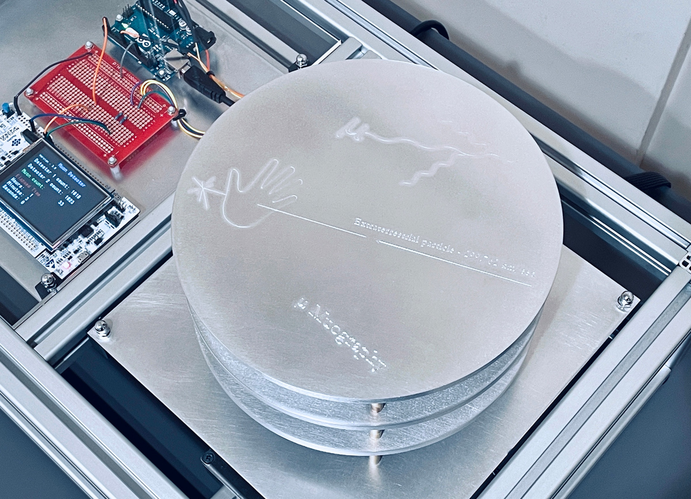

Archive / Exhibition
μMuography — CAM
- When
- November 2021—February 2022
- Venue
- Castlemaine Art Museum
- Exhibition
- Experimental Print Award 2021
- Process
- Time-based accumulative print
Project statement
μMuography is an experimental creative tool using homemade particle detectors to capture muon cosmic rays in a time-based accumulative printmaking process.

Artist statement
Every 10 seconds, a muon particle shoots through you at 99.9% the speed of light.
An intergalactic invisible messenger at 299,726 kilometres per second. The source of muons is largely unknown but they most likely come from supernova explosions billions of light years away. Muons are part of the native language of matter that makes up everything in existence, yet are invisible to human perception.
The μMuography device is a flexible technology and can be retooled to develop a variety of creative projects. For the Castlemaine Art Museum Experimental Print Award 2021, the device was configured as a cosmic printer.
The μMuography printer uses DIY sensors to capture muons as they cascade through space and time, while an LED light pulses to indicate a muon’s brief presence. For 2.2 microseconds, you are connected to the supermassive picture of the observable universe. Open-source software records each strike onscreen, accumulating them over the lifespan of the exhibition to create the resulting print image.
The μMuography print creates a rare factual account of the beautiful hidden forces of reality.